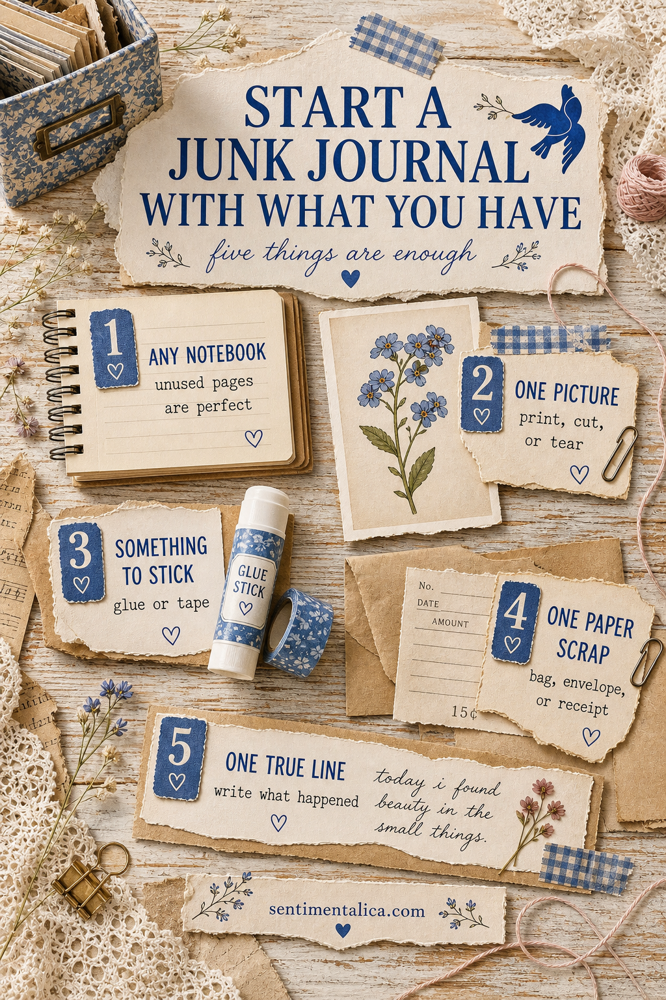
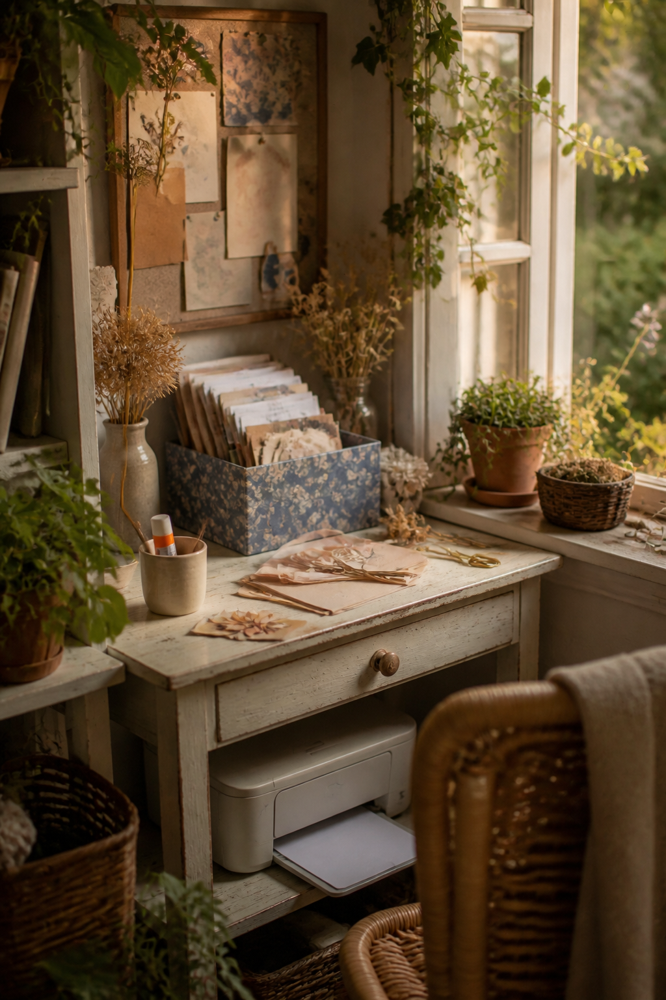

You do not need a box of vintage paper, a special binding, or a perfectly matched collection to start a junk journal. If waiting for the right supplies has kept you from making the first page, begin smaller: use one notebook, one picture, one scrap, something that sticks, and one true sentence.
That is enough for a real page. The point of a junk journal is not to prove that you own beautiful materials. It is to give ordinary paper and ordinary days somewhere to belong.

Choose the journal you will actually touch
Use an unfinished notebook, an old book with space in the margins, a school exercise book, or several sheets folded together. The easiest choice is usually the one already within reach. A precious blank book can make the first page feel like a test; an ordinary one gives you permission to experiment.
If the paper feels thin, glue two pages together. If the cover feels plain, leave it plain until the journal has begun to tell you what it needs. You are allowed to solve one tiny problem at a time.
Build the first page around one picture
Pick a picture because it makes you pause, not because it matches a plan. It might be a flower, a doorway, a family photograph, packaging, a magazine image, or something you printed at home. Place it slightly away from the center so there is room for the page to grow in one direction.
Add just one paper scrap behind it. A torn envelope, paper bag, receipt, old book margin, or piece of wrapping paper can create enough contrast to make the picture feel placed rather than dropped onto the page.

Use this four-move page recipe
- Place the picture first. Let it become the quiet center of the page.
- Tuck one scrap behind an edge. Repeat one color from the picture if you can.
- Add one small useful detail. A date, tab, thread, label, or short strip of tape is enough.
- Write one true line. Record what happened, why you chose the image, or how the day felt.
Then stop. A first page does not need to demonstrate every technique you may ever learn. Leaving a little quiet space makes it easier to return tomorrow.
What to write when the page feels too simple
Do not search for a perfect quote. Write something only you could know: “I noticed this color on the walk home,” “the kitchen was warm when it started raining,” or “I kept this because I did not want the afternoon to disappear.” Specific details turn decoration into memory.
If words still feel difficult, write a date and three nouns. Window. Tea. Thunder. That small record is already more personal than a polished paragraph borrowed from somewhere else.
Your first picture can be a gift
If the only missing piece is an image you want to use, Sentimentalica has a free collection of 100 floral pictures. The pack moves through roses, lavender, cottage flowers, writing panels, and bolder garden colors, so you can choose one image rather than trying to coordinate everything at once.


Open the free gift page and choose your first floral picture. The pictures open from the page, so there is no email link to wait for.
Start with the page you can make today. You can learn binding, pockets, stitching, and elaborate layers later. For now, one picture and one honest line are enough to turn an empty notebook into your junk journal.
Find more gentle page starters in the Sentimentalica journal archive.